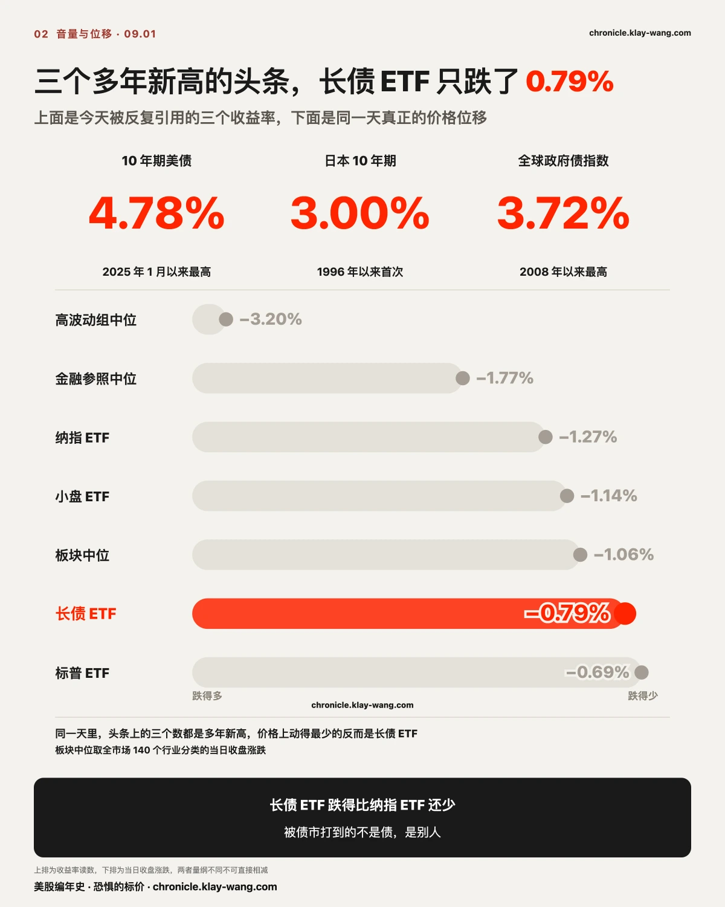
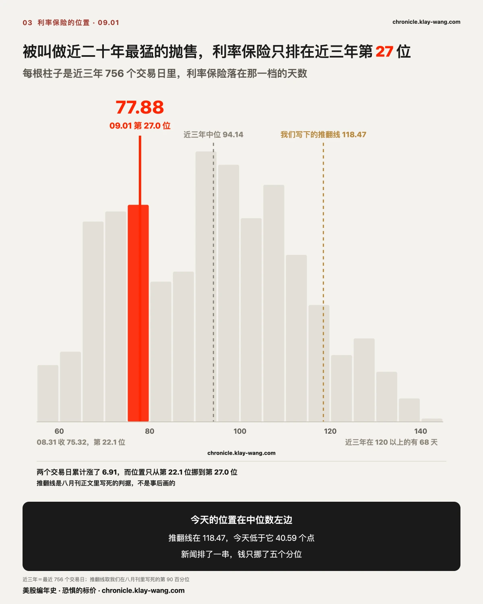
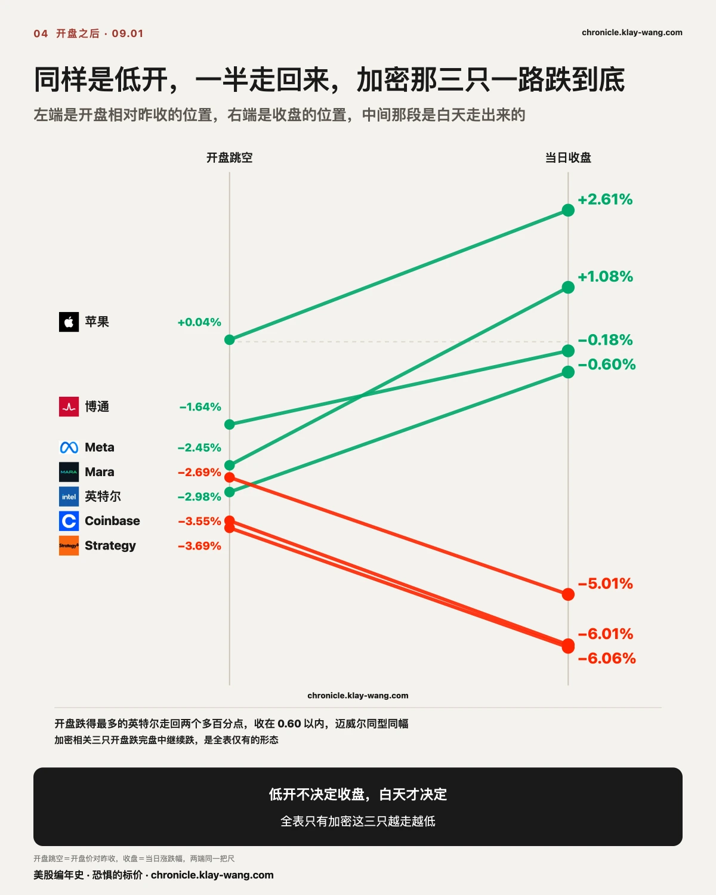
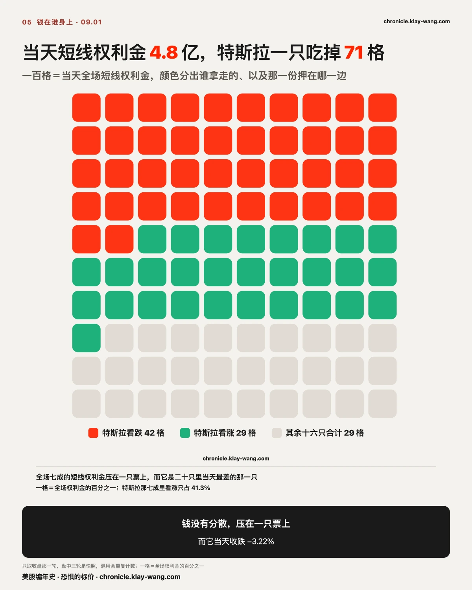
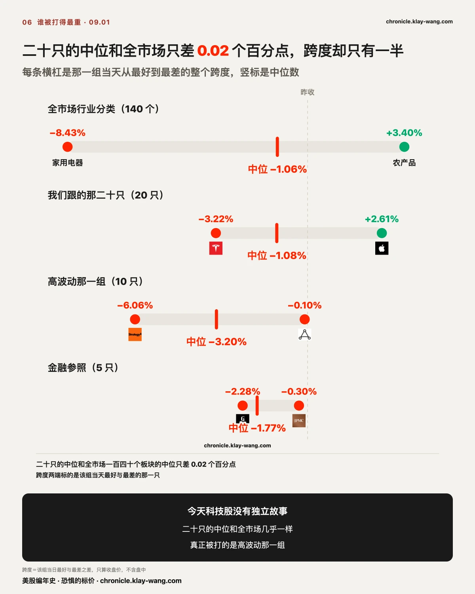
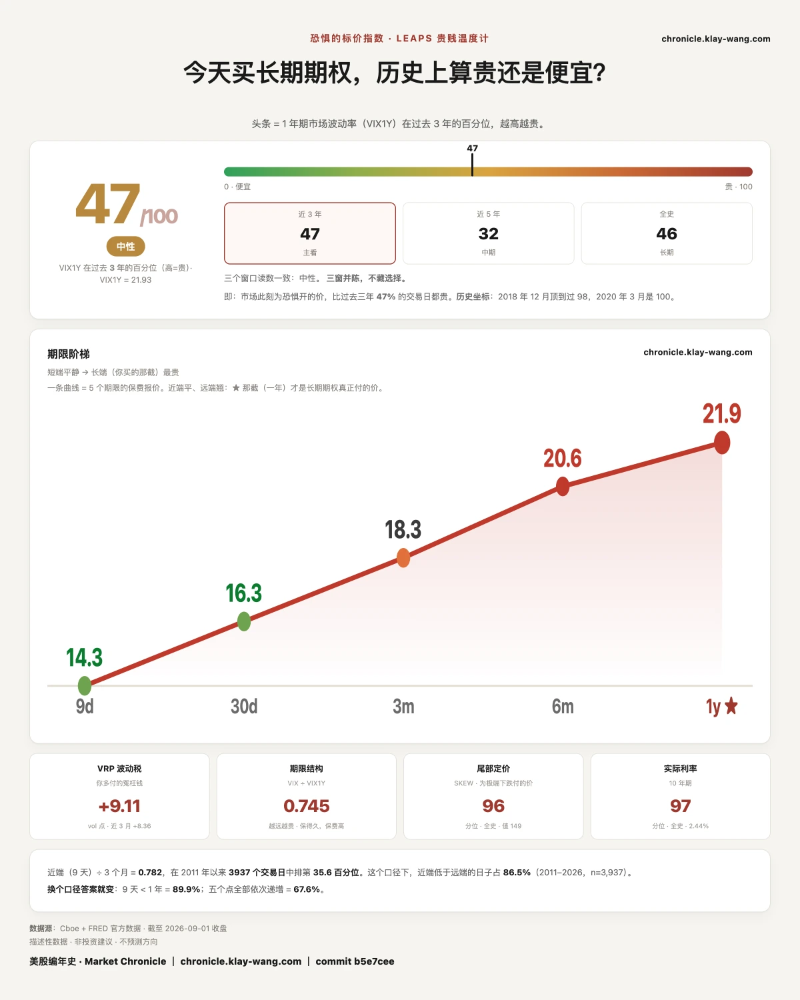

特斯拉的涨，和闪迪的涨，不是同一种涨？ · 8.31-9.4
三行干货：把水平当成变化去读，才会看到一场并不存在的崩盘
一，十年期美债 4.78% 是 2025 年 1 月以来最高，而当天它只动了约 5 个基点，长债 ETF 收跌 0.79%。
二，被这轮利率打到的是家用电器、黄金白银和算力链，长债 ETF 在二十只里排第 8。
三，全场七成的短线权利金压在特斯拉一只票上，其中七成又压在 09.02 到期。
〔横截面〕利率先动的是月供，芯片得排在家电后面
全市场 140 个行业分类，跌 100 个，涨 39 个，中位数 −1.06%。
按跌幅排一遍，第一名和债券没有任何直接关系：家用电器 −8.43%，
后面跟着厨房用具 −4.94%、建筑材料 −2.93%、家具家居零售 −2.54%。
半导体材料与设备 −2.90% 排在它们后面，差了将近三倍。
这条链路有名有姓。十年期美债收益率是三十年期房贷利率的定价基准，
房贷利率决定的是换房、装修、买大件家电这一串决策的月供。
收益率抬一档，最先被重新算一遍现金流的就是这批人。
这不需要任何人解释动机，它写在贴现率里，而且不用等到有人真的取消订单才生效。
第二堆是不生息的资产：铜 −3.86%、黄金 −3.77%、白银 −3.73%、贵金属矿物 −2.58%。
这一堆值得停一下。当天霍尔木兹海峡有超级油轮遇袭、油价连涨两天、WTI 收在 90 美元上方，
按常识黄金该是最该涨的东西。它跌了 3.77%，白银跟着跌 3.73%。
黄金和白银在同一天一起下跌，把恐慌这个解释排除掉了。
不生息的资产在真实利率抬升的日子里没有藏身处，这跟避险是两件相反的事。
涨的那 39 个里，排在最前面的全在一个主题上：农产品 +3.40%、化肥及农药 +3.29%、
农用机械 +3.22%、综合油气 +2.62%、油气勘探 +2.39%、石油精炼 +1.83%。
今天涨的东西，全是从地里挖出来或者种出来的。

〔债市〕债市今天没有崩，崩的是我们对水平和变化的分辨力
今天盘面是股债双杀：彭博全球政府债券指数收益率连续四个交易日走高，报 3.72%，
2008 年中期以来最高；日本十年期国债收益率触及 3.00%，1996 年以来首次；
美国十年期一度到 4.78%，2025 年 1 月以来最高；澳大利亚十年期上行 7 个基点报 5.223%。
四个多年新高，横跨美国、日本、澳大利亚。摆出来的证据很硬，
所以近二十年来最猛烈的一轮抛售这个说法，今天传遍了每一张收盘稿。
价格上呢。长债 ETF 当天收跌 0.79%。 同一天标普 ETF 跌 0.69%、
小盘 ETF 跌 1.14%、纳指 ETF 跌 1.27%，全市场板块中位跌 1.06%。
在这个被定义为债市抛售的交易日里，长债 ETF 跌得比纳指 ETF 还少，
在我们跟的二十只里排第 8，位置在中间偏上。
差距出在一个很容易被跳过的地方：头条报的是水平，价格反映的是变化。
4.78% 是一个水平，它相对的是 2025 年 1 月以来的所有交易日，所以叫多年新高。
而当天真正发生的位移是从 08.31 的 4.75% 走到 4.80% 上下，约 5 个基点，
两年期约 6 个基点，三十年期约 4 个基点。债券的价格不理会水平，
它只对变化做算术：几个基点乘上长债的久期，放大出来就是 0.79% 这个量级。
0.79% 正是几个基点该有的样子，它既不是抛售失控，也不是市场不理睬。
四个多年新高和一个 0.79% 因此可以同时成立，彼此并不矛盾。
把水平当成变化去读，才会得出债市崩了这个结论。
第二把尺子给出同样的答案。为利率买保险的价钱，08.28 收 70.97 排近三年第 14.8 位，
08.31 跳到 75.32 排第 22.1 位，09.01 再到 77.88，排第 27.0 位，两个交易日累计涨 6.91。
方向确实在涨，连涨两天。但它量的是未来的颠簸预期，不是已经发生的水平。
在一个被叫做近二十年最猛抛售的交易日，为利率买保险仍然排在近三年的第 27 位，
过去三年里有七成以上的日子它比今天贵。 市场把这次上行读成一次可预期的重定价。

还有一个当天发生、方向相反的事实。8 月 ISM 制造业 PMI 报 54.6，
低于预期的 55.2，也低于前值的 55.6，连续两个口径同时走弱。
增长数据走弱的日子里，长端通常因为增长预期下修而下行，今天它反着走。
同一天里两个方向相反的事实摆在一起，能排除掉一种解释：债市今天没有在给增长定价。
它在给别的东西定价：美国国债规模 8 月突破 40 万亿美元，
9 月还有约 2000 亿美元高评级企业债要跟国债抢同一批钱，
而沃什在杰克逊霍尔转鹰之后，利率互换市场对 9 月加息的定价从 34% 跳到 65%，
巴克莱与法兴把 9 月和 12 月两次加息一起纳入基准情景。
供给、赤字、政策路径，这三样都不会被一个走弱的 PMI 改变。

这一步也把八月刊立下的那笔账结了。那期写下的判断是市场为一次付了钱，没有为一串付钱，
并把推翻条件钉死在这把尺冲上近三年 90 百分位。
09.01 外面确实把一串排了出来，两家券商的基准情景里现在有两次加息；
而为乱不乱付的钱只从第 22.1 位挪到第 27.0 位，那条线画在第 90 位。
判断照着自己写下的判据量过一遍，继续成立。
〔路径〕低开不决定收盘，全表只有加密那三只没有走出白天
今天几乎所有票都低开。开盘那一下和收盘那一下讲的是两件事。
Meta 开盘跌 2.45%，白天走了 3.62%，收盘翻红 1.08%。
苹果开盘只动了 0.04%，白天走了 2.57%，收 2.61%，是二十只里最好的一只。
库克在 09.01 正式卸任、特努斯接任、任内股价涨 2275%，这是当天音量最大的公司新闻之一，
而它在开盘价上等于零反应，涨幅全部是开盘之后买出来的。
消息在开盘前就人尽皆知，价格却等到白天才动。
英特尔开盘跌 2.98%，白天走回 2.45%，收 −0.60%；迈威尔同型同幅。
博通开盘跌 1.64%，收 −0.18%。半导体这一组盘初一度让费城半导体指数跌 3%，
收盘时大部分收回了一半到四分之三。
全表只有一组例外：低开之后，白天继续跌。
Strategy 开盘 −3.69% 收 −6.06%，Coinbase 开盘 −3.55% 收 −6.01%，
Mara 开盘 −2.69% 收 −5.01%。三只都是加密相关，三只都是越走越低。
这三只落在跟黄金白银同一个位置上。加密资产和贵金属共享一条性质：不生息。
在真实利率抬升的日子里，持有它们的机会成本按同一个方向变化，
所以它们被放进同一个抽屉。区别只在于，黄金今天跌 3.77%，这三只跌了 5% 到 6%，
同一件事作用在杠杆更高的那一端，幅度就是这么放大出来的。

〔那笔钱〕七成的钱压在一只票上，而它买的只是明天
收盘那一轮筛出来的短线异常成交，全天权利金合计 4.849 亿美元，分布在 17 只票上。
只给总数没有意义。特斯拉一只占 3.442 亿，是全场的 71%。
第二名博通 5900 万，第三名苹果 3400 万，两个加起来还不到特斯拉的三成。
一天的短线权利金压到这个集中度，本身就不常见。
把这 3.442 亿再拆一层，形状才出来：
09.02 到期的占 2.374 亿，09.04 到期的占 1.015 亿，
09.11 与 09.09 两档加起来只有 530 万。
七成的钱压在一只票上，而这只票上七成的钱压在明天到期。
一天期的合约没有第二次机会。它的回报只写在 09.02 的收盘价上，
公司做对做错、季度好坏、换不换人，全部与它无关。
两个近端到期都是看跌那侧更重：09.02 看跌 1.466 亿对看涨 9087 万，
09.04 看跌 5559 万对看涨 4586 万。特斯拉当天收 −3.22%，是二十只里最差的一只。
这里出现了一个乍看矛盾的读数。特斯拉是二十一只里三十天保险降价最多的一只，−1.00。
当天跌得最狠、吃掉全场七成权利金的那只票，它一个月的保险反而变便宜了。
矛盾是表面的。保险按恒定期限算的是未来三十天，而这笔钱压的是明天。
买明天的人不需要为下个月付钱，卖明天的人也不会因此给下个月加价。
两个数放在一起互相解释：钱压在明天，不在这个月，所以这个月的保险没有变贵。

〔归属〕今天科技股没有独立故事
把三组放在同一把尺上量。我们跟的那二十只中位 −1.08%，跨度 5.83 个百分点；
高波动那一组十只中位 −3.20%，跨度 5.96；金融参照五只中位 −1.77%，跨度只有 1.98。
全市场 140 个行业分类的中位是 −1.06%。
我们跟的二十只，中位数和全市场只差 0.02 个百分点。
今天科技股既没有额外挨打，也没有独立行情。真正被打的是高波动那一组，
中位跌幅是二十只的三倍，而那一组里跌得最狠的三只，正是上面那三只加密相关。

〔转发〕债市抛售拖累股市这句话，后半段站不住
债市抛售拖累股市这句话，前半段有四个多年新高撑着，后半段需要一个数才能站住。
如果债市在打股市，被打得最重的应该是对利率最敏感的金融资产。
实际发生的是：长债 ETF 跌 0.79% 排第 8，金融参照那五只跨度只有 1.98 个百分点、
是三组里最整齐的一组，而跌到 6% 的是三只加密相关的票。
利率确实打到了东西，在家用电器 −8.43%、在黄金 −3.77%、在云与数据中心 −4.09%。
它打的是那些现金流要用高一档利率去折现的东西，持有债券的人今天挨得最轻。
这对你手里的票意味着什么
下面不给任何操作建议，只把价格换算成你自己能判断的东西。
手里是大盘 ETF 的：二十只的中位跌幅和全市场板块中位只差 0.02 个百分点，
这一天没有结构性分化，指数跌的就是市场跌的。
三十天保险二十一只里涨了十八只，一年期只涨了十只，
变贵的只有最近一个月那一档保护。
手里是半导体的：盘初费城半导体指数一度跌 3%，收盘时英特尔与迈威尔各收回两个多百分点。
跌幅出现在开盘那一下，收回发生在白天，这两段的原因不在同一个地方。
判断这一组要看路径，收盘价看不出来。
手里是特斯拉的：全场七成权利金压在它身上，其中七成到明天就到期。
那批钱表达的是对 09.02 这一天的看法，与这家公司的季度无关。
它一个月的保险今天反而便宜了 1.00 个点。
手里是苹果的：换帅当天开盘价几乎没动，全部涨幅在盘中，一年期保险微跌 0.08。
市场把这次交接当成一件已知的事在处理。
手里是加密相关的：这三只是全表唯一低开之后白天继续跌的一组，
和贵金属被放进了同一个抽屉，只是杠杆更高，所以幅度更大。
含义摆全，怎么动是每个人自己的账。
今天值得带走的三句话
一，水平和变化是两个量。 一个数创了多年新高说的是水平，
而价格只对当天的变化做算术，把两者混起来读，就会看到一场并不存在的崩盘。
二，开盘跳空和当日收盘是两把尺子。 低开的原因通常在隔夜，收盘的原因在白天，
拆开才知道一只票是被带下去的，还是自己走下去的。
三，黄金和白银一起跌的日子，不要按避险去读。 那种日子推动市场的是真实利率，
不生息的资产没有藏身处，杠杆越高的那一端跌得越多。
预告与下一期回访
八月刊那条债市判断，今天对过一次，没被推翻。 立案读数：08.31 债市那把尺收 75.32、
分位 22.1。今日读数：77.88、分位 27.0，两天累计涨 6.91。
月刊写死的推翻条件之一是这把尺冲上近三年 90 百分位，今天停在第 27.0 位，未触发。
另一条要等九月加息真的落地才开始计时，本日不适用。
判据不变：若九月加息落地后一年期读数三日内抬过 55，或这把尺冲上近三年 90 百分位，
则这一段收回认错。下一个自然检验点是 09.16 到 09.17 那次会议。
只看一年期报价与债市那把尺。
特斯拉那 2.374 亿的 09.02 档，明天自然开奖。 本日读数：09.02 到期看跌 1.466 亿
对看涨 9087 万，当日收 356.09。判据：09.02 收盘价落在哪一侧，
两侧同时下注的那一档，赢的是收盘价所在的那一半。只看收盘价与短打表收盘轮。
三十天与一年期的分岔会不会收敛。 本日读数：三十天二十一只里十八只涨价，
一年期只有十只涨。判据：若九月内出现一年期涨价只数反超三十天的交易日，
则这次分岔是事件驱动的临时现象；若连续保持近端涨远端不动，
则定价重心确实只在近端。只看恒定期限表 15:45 那一轮。
苹果换帅的定价会不会迟到。 本日读数：开盘跳空 +0.04%，全日 +2.61%，
一年期保险 28.58 落到 28.50。判据：若九月内苹果一年期保险抬过 30，
则市场把交接重新读成了一个变量；若继续贴着 28 上下，则今天这个读法成立。
只看恒定期限表 15:45 那一轮。
〔温度计〕两把各算各的尺子，今天给了同一个答案：长端没跟
还有一把尺子量的是同一件事，而且它跟债市那把是各算各的。
恐惧的标价指数今天读数 46.8。 它量的是一年期波动率在近三年里排第几，越高越贵。
最近八个交易日：08.21 是 61.8，一路走低到 08.31 的 45.5，09.01 回抬到 46.8。
八天退了十五个分位，今天补回来 1.3。
今天这个 1.3 怎么来的值得单独说一句：一年期波动率只从 21.87 动到 21.93，
动了 0.06，排名却动了 1.3。 它落在分布最密的那一段，
一点点绝对值的变化就能推动一堆排名。反过来同样成立：
在这个位置，排名的跳动比价钱的跳动大得多，别把排名的动静当成价钱在剧烈变化。
今天各个期限的报价：九天 14.33、三十天 16.34、三个月 18.33、六个月 20.56、一年 21.93，
从近到远一路抬高，是标准的正向升水。越往远处，愿意报价的人要的钱越多，
而今天真正被加价的只有最近那一档。
债市那把尺今天排第 27 位，股市这一把排第 46.8 位。
两把尺子来自不同的市场、不同的算法、不同的做市商，今天说的是同一句话：
在一个被叫做近二十年最猛抛售的交易日，长端的保险价钱没有跟上来。

开这个价的是卖保险的人，买保险的人只能照着付。
短端是情绪，一条新闻就能跳；长端是成本，做市商必须报价，不猜方向，
只算承担这个风险要收多少才不亏。它一旦真动了，说明有人的成本模型改了。
今天它没怎么动。
恐惧的标价指数（Fear-Price Index）· 2026-09-01 · 读数 46.8/100：一年期波动率 VIX1Y 为 21.93，
处于近三年第 46.8 百分位，高即贵。逐日台账与口径 → chronicle.klay-wang.com · 转载注明：恐惧的标价指数 · Market Chronicle
期权异动与个股逐日 → chronicle.klay-wang.com/options
温度计读数与两本台账 → chronicle.klay-wang.com
明天开盘前值得回来看一眼的有两个数：特斯拉那 2.374 亿押在 09.02 到期的合约，
明天收盘就自然开奖，收在哪一侧当场有答案，逐票在期权页每个交易日更新一次；
另一个是这条温度计会不会继续往上补，还是又掉回 45 附近，站上台账逐日更新。
本站不提供投资建议，不预测方向，不做择时。